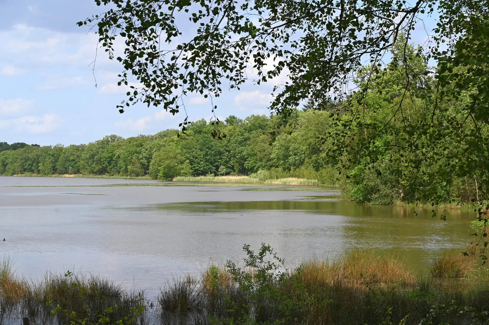
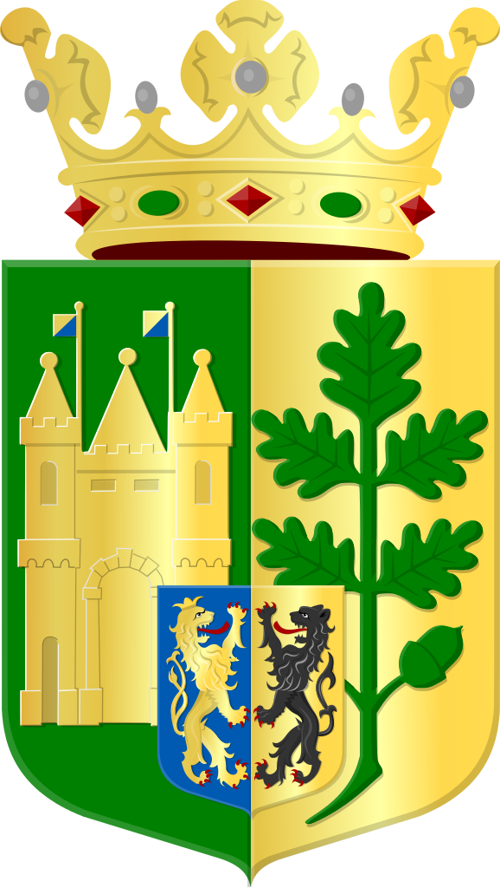

- Velden is een van de drie dorpjes met Gekke Moandag
- Het Pieterpad loopt door Velden
- Het subgebied Schandelo, bevat veel kassen
- Velden, samen met Arcen, zijn de groenste Gemeenten
- Velden haalde in 2006 het landelijk hitterecord (36.9C)
Velden ligt aan de Maas vrijwel tegenover Grubbenvorst, waarmee het door een veerdienst verbonden is. De hoogte bedraagt ongeveer 17 meter. Er wordt land- en tuinbouw bedreven. Ten zuidoosten ligt het natuurgebied Zwart Water, waartoe ook het kleinere gebied De Weerd (10 ha) wordt gerekend. Daar tussenin ligt nog de Genooierheide (37 ha), dat eigendom van de gemeente is. Een kleine beek, Stepkenbeek genaamd, vormde vroeger de gemeentegrens ter hoogte van de Maas.
De oudste akte van de schepenbank dateert van 25 januari 1431, maar had nog geen zegel. In 1460 wel en het vertoont een wapenschild met een tak van vijf eikenbladeren en twee eikels. Het wapenschild is omgeven met een rand van takken. Vanaf 1492 wordt het iets heel anders, namelijk een Andreaskruis (kruis gedraaid als een X) met tak aan elke zijde. Vanaf in ieder geval 1662 met alleen het Andreaskruis.